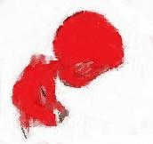
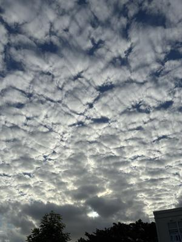
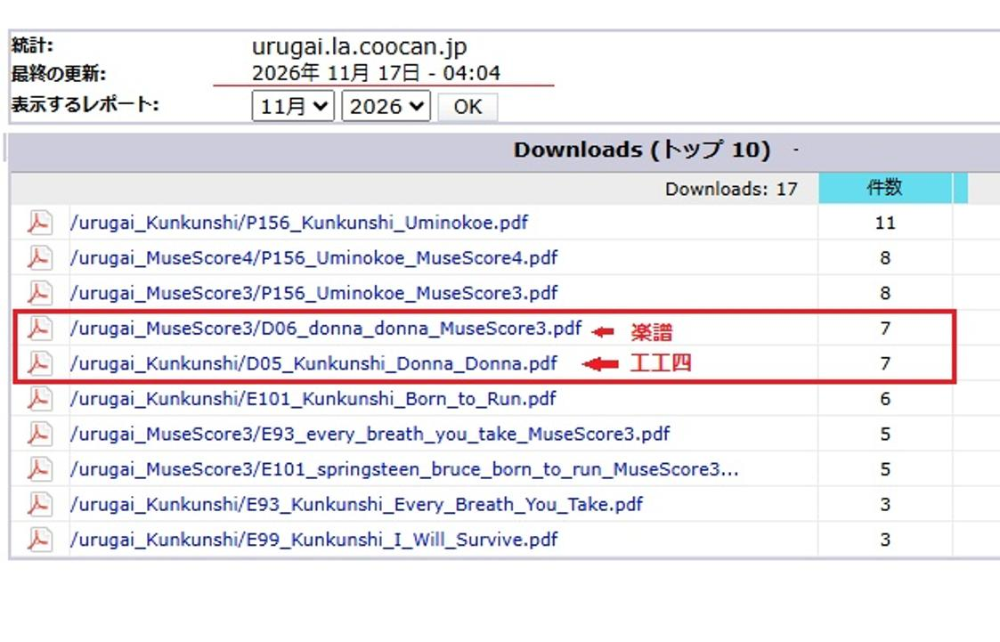

うるがいの話 ある日
最新: みんなのうたドナドナ【うるがいの話 ある日】とは 一日だけのプログです
『うるがいの話』の最新一日だけのプログで、通信料が少なく経済的だ。カニの画像をクリックすると全ての日付が載る『うるがいの話』サイトを表示します
|
|
【うるがいの話】 うるがい(ｳﾙｶﾞｲ urugai)とは、『もずくがに』の名前でとても大きくなります。 |
|---|---|
|
|
【カミマヤーの話】 猫のことを方言でマヤーといいます。カミマヤー（kamimayaa）とは、神の猫のことです。 |
|
【たながぁの音楽】 たながぁ（ﾀﾅｶﾞｰ tanagaa）とは手長えびのことで、何種類かあり大きいのは車 エビぐらいになります。 |
|
 |
【ぶながぁの話】 ぶながぁ(ﾌﾞﾅｶﾞｰ bunagaa)とは、赤い髪の毛、赤い身体、そして身長は１ｍ２０ｃｍ ぐらい、川の蟹を食べているの目撃された。場所は沖縄県国頭郡大宜味村のと ある村僕の隣近所に住んでいる爺さんから、聞いた話です。 |
|
|
【ギーマの話】 ギーマ(giima)とは、山原の里山に咲くスズランに似た、 花を付けます。実は食べられます、 気が付くと口の周りが紫になっています。 |
2026年11月17日 (火）みんなのうたドナドナ
15:55

夜９時半に、小乗チャンネルに『みんなのうた ドナドナ』を
アップしました。今日、深夜の４時までのアクセスレポートを
みると６回ほどのダウンロードがあります（７回となっている
のは、私のお試し１回）。この人たちは、夜、９時半以降にユ
ーチューブ動画を視聴している。ここ前の土曜日には、大乗チ
ャネルで同じように夜９時半に、『Born to Run』をアップし
たら同じように５回ほどダウンロードしてました。待っている
人が、いることはいいですね。

なぜ、ドナドナなのか。小乗チャンネル向けに『えんどうの花
』（たっちゃんさんが、大湾部長とカラオケで歌った十八番）
の楽譜情報を収集しているときに、ＮＨＫみんなのうた愛唱歌
集のドナドナが、載っていたからです。外国の民謡かと思って
いたが、ジョーン・バエズという女性の人の作品とあった。元
の英語の歌詞と日本語の歌詞は、微妙に違っていた。ネットに
は、英語バージョンの歌が３番までの楽譜データがありました
が、聞きなれている日本語版にしました。そして、ドナドナだ
けだどパッとしないので、みんなのうたを頭に追加したべ。